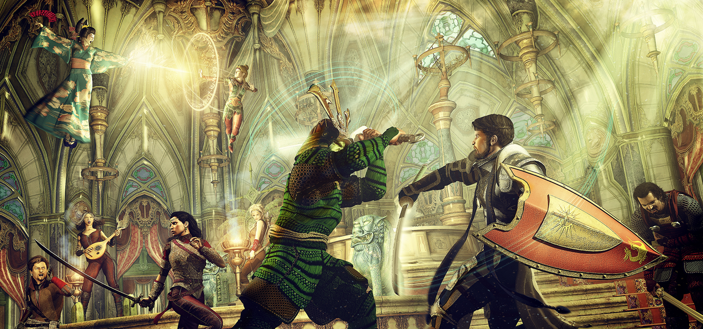
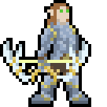
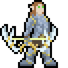
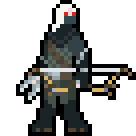
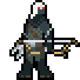

Monday, February 22, 2021
Jade Regent - Session #91
Tonight I rolled a 13 for the lucky roll. Would you believe that nobody rolled a 13 once tonight? Some lucky roll huh? Anyway, for this session my players were faced with a deadly puzzle (haunt rules). So the party face opened a crypt door and was met immediately with a large green floating skull speaking only in Necril. Thankfully one of the party members was able to speak the language and get the big clue, "Move".
The puzzle was actually very simple, stay out of the way of the skull so it could pass by. Some tried to run but we're immediately petrified and controlled to only look at the eyes of the skull. One of the players even had the idea of throwing over a blanket on the person to stop them from looking but nothing worked. Finally after two party members were finally turned to statues and the players started using their brains, they realized we should just move it out of the way of the skull. Once that happened, the skull passed and the players who were petrified broke free and everything was back to normal.
Quite the interesting experience if you ask me! Anyway, my dog, Roxy, had to go to the bathroom so the session had to break half way through. I was hoping our group could have gone farther than just this puzzle, but it was still a great session overall!
I'm looking forward to the rest of this dungeon as there is a lot more in store for my players!
-NPC
Monday, February 15, 2021
Jade Regent - Session #90
Before the session started, I rolled the lucky roll of the night and rolled a 9! What luck! I'm sure my players will appreciate it being such a mid roll. After that, I started up session prep with a little music from Syrinscape. In the custom moods section I have created the Necropolis sound. This sound will be used for the remainder of the Hungry Storms book.
I don't want to reveal too much about the ending of this chapter in Jade Regent, but I do have to say, it will be quite interesting to see how my players handle the boss at the end. I don't think they are going to see it coming.
Personally when I run a session, I always have a glass of water nearby. Talking the whole time and creating voices or sounds is taxing on the vocal cords, so I generally only use this water after speaking for a long period of time. During a session, I typically keep a handful of sticky notes on hand. I use these little notes to write down important conversation between PCs, keep track of abilities that have been used, and also keep track of hero point spending.
I am currently working on having this website have its own domain. My friend was kind enough to create this platform for me to get out my thoughts, show potential players how I run games, and have a space to contact me in many formats.
-NPC

 

 
